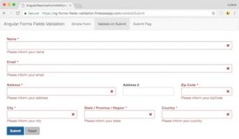
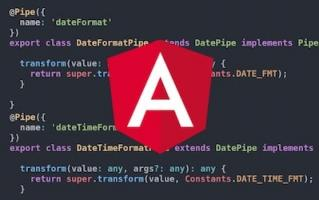
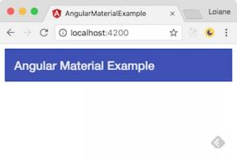
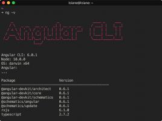
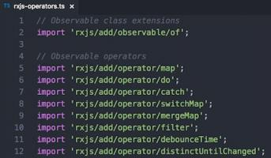
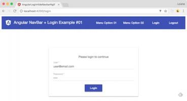
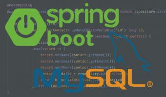

This is a great post. Thank you for sharing your knowledge.
Also on loiane
Suporte Sass no Sublime Text
- 3 years ago
- 1 comment
Olá pessoal,Tempos atrás mencionei esse plugin do Sublime Text que …

Angular Reactive Forms: trigger …
- 3 years ago
- 51 comments
In this article we will learn different approaches of validating all form fields …

Angular Tips: Formatting Dates …
- 3 years ago
- 10 comments
In this article we will learn how to create a custom Date Pipe with Angular.

Getting Started with Angular Material 2
- 3 years ago
- 19 comments
This article will show you how to setup your Angular project (v2+) using …

Upgrading to Angular v6: Step by Step
- 2 years ago
- 10 comments
Angular v6 was released on May 3rd and now we can focus on upgrading our …

Angular Tips: Avoiding duplication of RxJS …
- 3 years ago
- 12 comments
Updated post

Angular: Hide Navbar Menu from Login page
- 3 years ago
- 9 comments
In this article we will learn two approaches to hide the Navbar Menu when …

CRUD REST API Using Spring Boot 2, …
- a year ago
- 9 comments
In this article we will learn how to develop a CRUD RESTFul API with Spring …
- Recommend Recommended 26
- Find More Discussions
Discussion Recommended!
Recommending means this is a discussion worth sharing. It gets shared to your followers' Disqus feeds, and gives the creator kudos!
- TweetShare
- Sort by Best

hajar benamar rconr007 • 2 years ago see moreHi, I followed the tutorial but I got stuck in part 5 "Let's code", where we can put the script
Please !Carlos E Oliveira hajar benamar • 2 years ago see moreAdd the html code into your "app.component.html" wich is the first page to be loaded in your application (look the extension is .html)
and add the script code to your "app.component.ts" (look the extension is .ts)
Vikas Bansal • 3 years ago see moreI am getting the following error : please help
export 'Renderer2' was not found in '@angular/core'
Gabriel Madeira • 2 years ago see moreLoiane, excelente exemplo. Você sabe se tem como fazer a navbar funcionar para mobile?
Gady • 3 years ago see moreWhat do you think about Bootstrap 4? Is it production ready?
It seems to me it's deprecated before seeing the lightLoiane Groner Mod Gady • 3 years ago see moreI haven't seen anyone use BS4 in prod yet. But I do have a few friends with projects being developed with BS4 already. I believe it depends a lot on the project and the public/users that will use the project. Where I work, we will not be able to use until it is stable.
Dhiraj Bhamble • 2 years ago see moreHi...Loiane,
I am using bootstrap@4.0.0 with angular cli@1.6.6
I did all all the above steps to install bootstrap. imported it on styles.css and also mentioned in angular-cli.json
My webpack complies successfully also styles are injected in styles.bundle.js
But in browser i cant see any css effect why it happens, i am trying it since a week please help.Loiane Groner Mod JJ RomMar • 3 years ago see moreThe build process it is still the same. If you created your project with angular-cli you can use the command ng build --prod to generate the files that will be deployed in production. This example on github has a script for a continuous integration prod build with angular-cli.
danielhilst Pagal Panchi Insaan • 2 years ago see morebootstrap depends on jQuery. They will not migrate to a React or Angular approach, so basically you telling me that re-implementing every version of bootstrap, twice, without jQuery is okay just because jQuery is irrelevant? If its "irrelevant now" why bootstrap is still using it?
MrBilliards danielhilst • 2 years ago see moreSaying jquery is irrelevant is saying javascript is irrelevant because jquery is javascript. Jquery is just a javascript library that makes dom manipulation simpler (and solves some cross browser issues), and it is quite good at what it does. The only real argument to be made against adding jquery is the initial payload (which can be mitigated with gzip or cdn).
The main reason bootstrap uses jquery is that the jquery plugin pattern works very well for standalone components. Otherwise they would simply write the entire component with plain javascript. You can't expect bootstrap to build out components for every framework (react, angular, vue, etc) that comes along. And, for those who just want to build a small project that does not require all the tools a framework provides, bootstrap components are usually a good fit. Also, devs tend to forget that bootstrap is first and foremost a css framework. So if you don't want / or cant use the bootstrap javascript with your given framework, often you can find a bootstrap component library (written by someone other than the bootstrap project) for whatever framework you are using that will work with bootstrap's css.
People nowadays like to bash jquery, but at the end of the day it's a well tested/proven javascript library that helps get things done. To say it is irrelevant just because is ignorant. It's just another tool ... use it were it makes sense to use it.
saurav kumar • 9 months ago see moreSomething essential missing from this post - Adding libs to angular.json, else css/js won't be available.
Loiane Groner Mod saurav kumar • 9 months ago see moreHi did you check this section? All steps included: https://loiane.com/2017/08/...
saurav kumar Loiane Groner • 9 months ago see moreCSS isn't the only part required - njs components required - "./node_modules/jquery/dist/jquery.min.js",
"./node_modules/bootstrap/dist/js/bootstrap.min.js"Loiane Groner Mod saurav kumar • 9 months ago see morePlease read the post again. The purpose is NOT to import those files as they are not needed.
Patrick Yong • a year ago see moreSeems like Bootstrap 4 only works with SCSS styling, if you created the project with CSS instead, then it won't work. Not sure this is a bug with Webpack or Bootstrap.
I have try CSS styling with Bootstrap 3 and it is working fine
sanchay kothari Patrick Yong • a year ago see moreThis is because Bootstrap 4 uses SCSS instead of CSS and to run it with angular , you need to choose SCSS instead of CSS. Not a bug just some modification from bootstrap 3 to bootstrap 4
BR • 2 years ago see moreThanks for the great article - very good overview and basic comparison of bootstrap and the various Angular modules for it.
Harry • 2 years ago see moreI am using 2 modal , one modal inside another modal,when I open first modal and after that second inside of first modal ,so i want first modal should close . how to do please let me know.
Ankit Patidar • 2 years ago see moreNot work external css and js When i use in my project..i want to use other css and js example - mystyle.css or my.js files. how can i use this ??
Taha Zgued • 2 years ago see moreVery well put together post. Thank you very much for the great effort and sharing your knowledge
Sunil Chaudhary • 2 years ago see moreNice article, its working on app.component.html, how to make it working for any html page. I am getting openModal is not a function on any other page.
Kamlesh kumar Sunil Chaudhary • 2 years ago see moreI copy this code into that .ts where Modal open:
public openModal(template: TemplateRef<any>) {
this.modalRef = this.modalService.show(template); // {3}
}
Eduardo Costa • 2 years ago see moreAlways the same message... http://localhost:4200/assets/img/ngx-bootstrap.svg 404 (Not Found)
Justine Mojal Eduardo Costa • 2 years ago see moreYou just need to put a picture in that folder :)
RafaTheOnly • 2 years ago see moreA onde eu coloco isso: @import '~bootstrap/dist/css/bootstrap.min.css'; e qual a diferença entre instalar o jQuery do que esse ngx-bootstrap?
Eduardo Alcântara • 2 years ago see moreHi,
I followed every step, but in the end the "./app-bootstrap/app-bootstrap.module" does not exist. Do I have to copy it from somewhere? Does it supposed to be created on npm install?Hugo Pereira Eduardo Alcântara • 2 years ago see moreno, that's file you create, you can look at on git-hub source code, the directory that contains app-bootstrap.module, shes dont mentioned that creation
Meng Tian • 2 years ago see moreto make the demo work properly with bootstrap 4, there should be a navbar-expand-md class in <nav>
Sathish Yadavelly • 2 years ago see moreStyles are not applied properly with following above steps
vikash choudhary • 2 years ago see moreThanks for the post. It helped me to figure it out my problem.
Happy Coding !!
MCodeMedia • 2 years ago see moreI notice this does not work as I expected. Should the menu collapse into a hamburger style menu when on mobile? Is that possible? Just like the bootstrap navbar?
Felipe Huggler • 3 years ago see moreLoiane, faltou documentar que a pessoa precisa importar o TemplateRef from '@angular/core';
Alex Benitez • 3 years ago see moreExcellent post! I dowloaded the code in the repository. Everything worked as is... however, I tried upgrading the code to bootstrap 4 but couldn't make it work... (e.g. "npm install bootstrap@next ngx-bootstrap@next --save "... "npm install bootstrap@next ngx-bootstrap --save "). Is there any additional change that probably we need to make it work? Do we need popper.js or something else? (e.g. the navbar doesn't work... I only see hyperlinks).
Wonder if it would be possible to create branch in the repository with bootstrap 4 and ngx-bootstrap which we could just download and give it a try and learned the required changes?
(these are the only changes in my package.json).
"bootstrap": "^4.0.0-beta.2",
"ngx-bootstrap": "^2.0.0-beta.7",Thanks so much for your help
Gustavo Magalhães • 3 years ago see moreOi Loiane,
Montei um projeto aqui do angular com bootstrap. Segui os passos daqui e da documentação do git. Fiz um teste só com o nav-bar e o menu não expande quando está minificado. Vi que no .angular-cli.json não pede pra colocar os caminhos do js no scripts: []. Falta alguma coisa a mais?